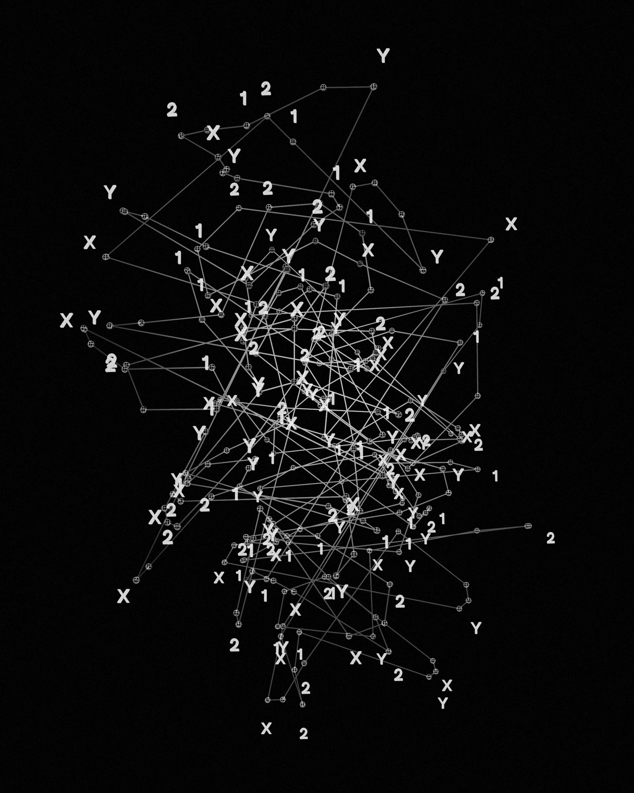
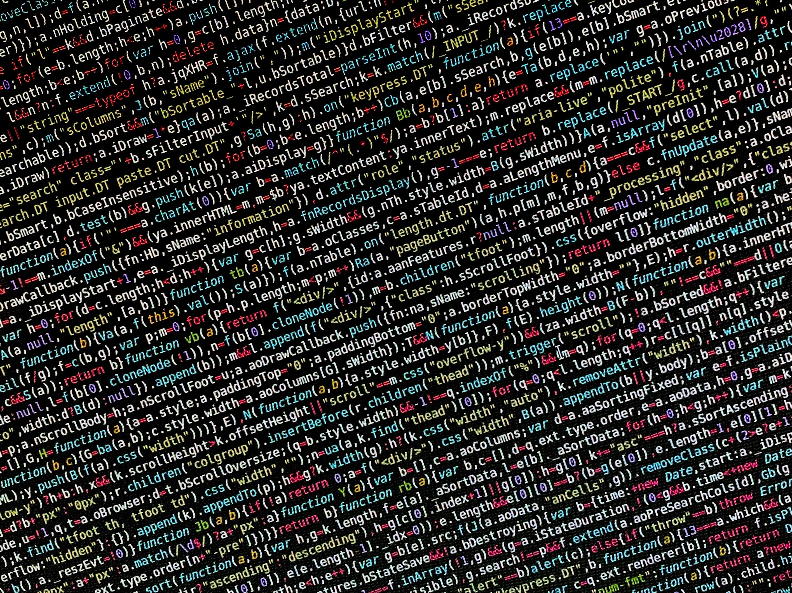

LOGISTICS
Are your freight invoices correct?
Freight invoices contain valuable information about transport costs, routes and services. Comparing them with agreed prices can reveal unusual charges that deserve a closer look.
THE PROBLEM
Why are freight invoices difficult to verify?
High invoice volumes, automated billing and limited manual checks leave room for overcharges.
-
Thousands of invoices
Large numbers of carrier invoices arrive every day. Each contains rates, services and surcharges to check.
-
Automated carrier billing
Carriers generate invoices automatically. Basic checks do not necessarily compare every charge with agreed rates.
-
Manual invoice review
Employees still need to review invoices while managing daily operations. Detailed checks take time.
-
Overcharges go unnoticed
Incorrect rates and surcharges can pass through. Companies may pay more than agreed.
DATA PREPARATION
Prepare reliable data before training a model.
Collect records, organise their information and label verified examples.
-
Collect historical records
Gather historical invoices, contracts and shipment records from previous months or years.
-
Standardise the information
Different invoice formats are mapped into one consistent data structure.
-
Label verified cases
Compare historical invoices with verified references. Mark each case as correct or incorrect.
TECHNICAL SOLUTION
Find patterns that help identify unusual invoices.
Data science methods can help distinguish ordinary cost patterns from cases that need closer investigation.
-

Identify useful predictors
Explore which variables, such as transport mode, route, service type and cost components, help distinguish verified invoices from known errors.
-

Train and test the model
Use separate training and test data. Evaluate how well the model identifies known cases and repeat the process when the results are not reliable enough.
-
Validate the results
Test whether the useful patterns remain reliable on previously unseen data. Noisy data and misleading relationships must be considered before using the model.
PRACTICAL IMPLEMENTATION
From new invoices to a focused review.
Once validated, the model can support recurring invoice checks and help employees focus on the cases that need attention.
-
Feed new data
Provide new daily or weekly invoices in the same standardised format used to develop the model.
-
Process the invoices
The model evaluates the available information and compares each invoice with patterns learned from historical data.
-
Review flagged cases
Invoices can be marked as potentially unusual or within the expected range. A flagged invoice needs a second check; it is not automatically an error.
INTERACTIVE DEMO
Explore sample freight data.
Explore 1,000 simulated European transport orders. Each sample displays 10 randomly selected shipments.